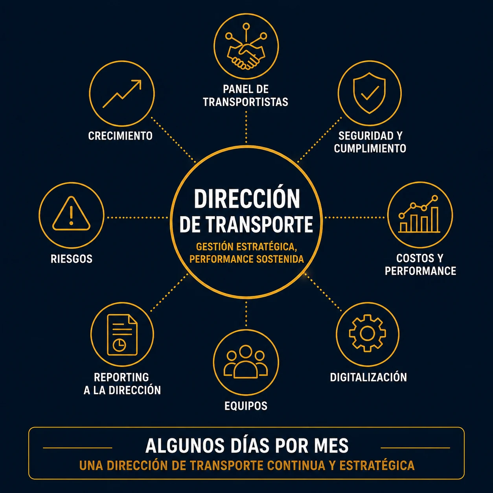

Tus operaciones de transporte (nacional, europeo, internacional) ganan en complejidad y necesitan una gestión dedicada, sin que eso justifique necesariamente una contratación full-time.
La Dirección Logística / Transporte Fraccionada de STRANEXO te permite acceder rápidamente a un expertise de dirección específicamente dedicado a tus desafíos de transporte. Según tu organización, esta intervención puede tomar la forma de una Dirección Logística Fraccionada o de una Dirección de Transporte Fraccionada.
Trabajo junto a tu dirección para gestionar la performance de tus operaciones de transporte, asegurar a tus proveedores y hacer progresar tu organización. Tu empresa sigue siendo la única mandante y contraparte contractual directa con los transportistas; no actúo como agente de transporte.

Las palancas habituales (renegociación puntual) ya no alcanzan para contener el aumento de tus costos de transporte.
Nacional, europeo, internacional: tus proveedores se multiplican sin una gestión centralizada.
Un responsable de transporte o logística deja la empresa. Necesitás un expertise de dirección para mantener la gestión.
Querés estructurar tu función transporte antes de crear un puesto permanente o antes de una nueva etapa de desarrollo.
Mi rol es acompañar a tu dirección en la estructuración, la gestión y la evolución de tu organización de transporte y logística.
Evalúo y aseguro tu panel de transportistas, apoyándome en una experiencia operativa del sourcing, el cumplimiento normativo y la gestión de riesgos en el transporte.
Cada intervención se construye alrededor de tus prioridades, con un objetivo simple: reforzar tu organización mientras tus equipos ganan en competencia.
Contás con una visión clara de tus costos, tus plazos y tus prioridades de transporte.
Tus proveedores están seleccionados, evaluados y gestionados según criterios claros, en cada escala geográfica.
Reducís tus riesgos operativos y regulatorios gracias a un mejor control del cumplimiento de tus proveedores.
Contás con indicadores confiables para gestionar tu performance de transporte con mayor visibilidad.
Tu organización de transporte evoluciona al ritmo de tu empresa, sin generar rupturas en tus operaciones.
Tus equipos ganan autonomía en la gestión cotidiana de tus operaciones de transporte.
Trabajo algunos días por mes, a tu lado, para darle a tu función transporte una dirección continua sin las cargas de una contratación full-time.
Seguimiento de los costos, los plazos y la performance de tus operaciones de transporte, en cada escala geográfica.
Identificación de las palancas de ahorro sostenible y seguimiento de los planes de acción asociados.
Reporting estratégico mensual y apoyo a las decisiones relacionadas con tu función transporte.
Asegurar la gestión de KPI y la performance de transporte de una PyME multi-planta en crecimiento.
Supervisar en el tiempo la performance y el cumplimiento de un panel de transportistas ya existente.
Auditar y asegurar el cumplimiento normativo de tus proveedores de transporte.
Mantener la gestión de las operaciones de transporte después de la salida o la ausencia de un responsable.
Acompañar un proyecto de evolución de tus herramientas de gestión de transporte (TMS) y la gestión del cambio asociada.
Acompañar el desarrollo de competencias de un futuro responsable de transporte y reforzar de forma sostenida la organización.
No. Intervengo únicamente en consultoría y gestión. Tu empresa sigue siendo la única mandante y contraparte contractual directa con los transportistas.
La Dirección Logística / Transporte Fraccionada se concentra específicamente en tu función transporte y logística. La Dirección Supply Chain Fraccionada abarca la gestión del conjunto de tu organización Supply Chain (compras, logística, producción, ventas).
La especialidad Transporte es un trabajo puntual orientado a analizar una situación y acompañar la implementación de mejoras. La Dirección Logística / Transporte Fraccionada consiste en asegurar la gestión de tu función transporte en el tiempo, algunos días por mes.
No. El objetivo es ajustar el tiempo de intervención al ritmo real de tu actividad de transporte: algunos días por mes suelen alcanzar para estructurar, asegurar y gestionar de forma sostenida, sin las cargas de un puesto full-time.
Te propongo una primera charla de 30 minutos para entender tu organización, tus desafíos e identificar si este tipo de acompañamiento responde a tus necesidades.
📞 +33 7 68 62 13 03 (Francia, WhatsApp)
📞 +54 11 6848 3806 (Argentina, WhatsApp)
✉️ axel@stranexo.com